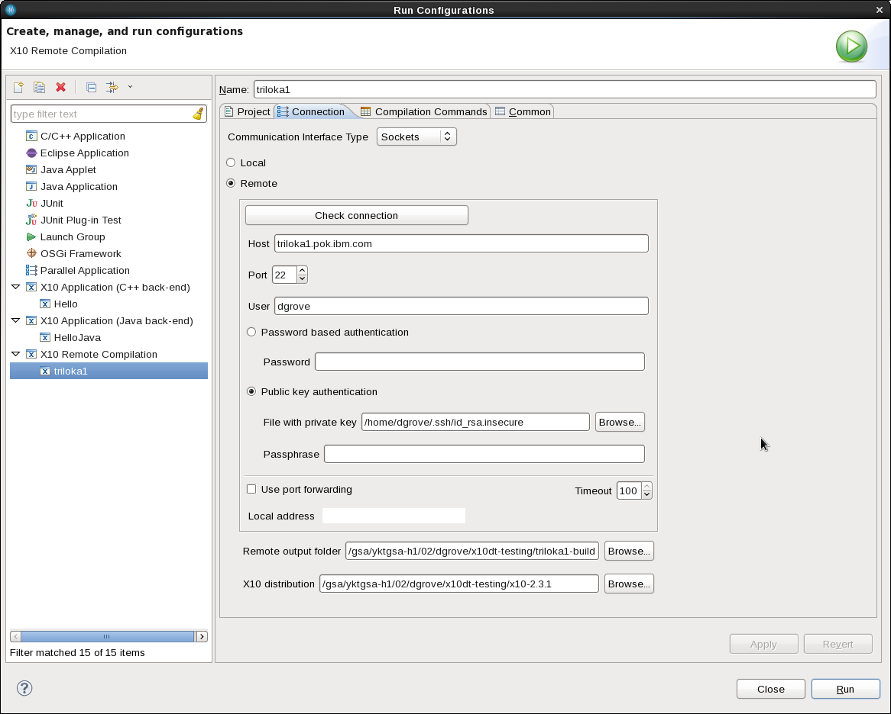
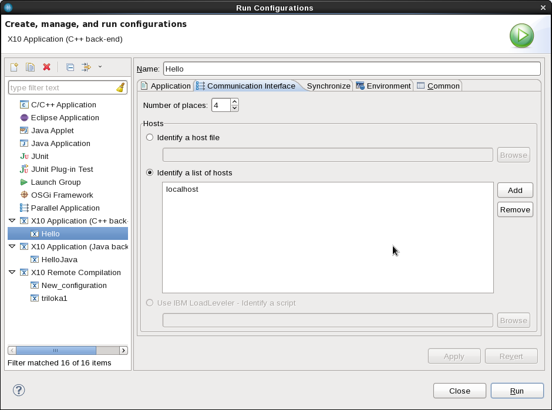
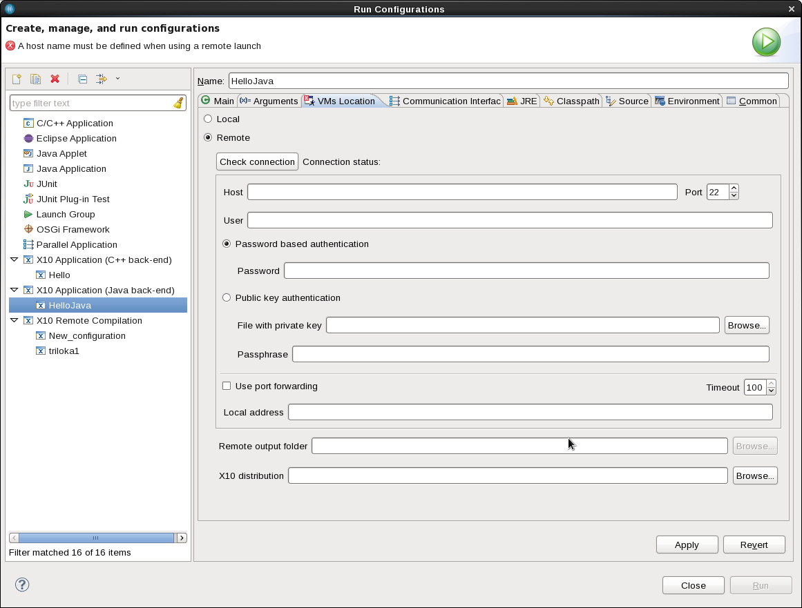

Remote Building
X10DT allows you to compile C++ Backend projects on multiple machines via its Remote Compilation facilities.
When a project is configured for remote compilation, X10DT will automatically transfer modified files to
the remote machine and perform the necessary compilation and linking steps to produce an executable
that is suitable for execution on the remote machine.
Configuring X10 Remote Compilation for a C++ Backend Project
To configure how your program will be compiled on remote machines, you first need to create an X10 Remote Compilation
configuration. The X10 Remote Compilation configuration describes how to connect to the remote machine, what directory on the machine
should be used to place generated files, and where on the remote machine to find an X10 distribution.
To create a Remote Compilation configuration, go to
Configure -> X10 Compilation...
and create a new X10 Remote Compilation. After selecting a Project, switch to the Connection tab and select the communication interface type (Standalone, Sockets, or PAMI).
Then select the "Remote" radio button. After filling in the hostname, userid and authentication information click on the "Check Connection" button
to verify that X10DT is able to connect to the remote machine. If the connection is successful, you will be able to browse
the remote file system to specify directories for the "remote output folder" and "X10 distribution." Clicking on "Run" causes the project to be cleaned and rebuilt using the new configuration
information.
Only one remote compilation configuration is allowed per project. If this configuration is missing, the builder assumes a local build.
This type of remote compilation configuration is not necessary (and not allowed) for Java backend projects,
because the code generated by the X10 compiler's Java backend is platform independent.

Remote Launching
Remote Launch of a C++ Backend project
After configuring the X10 Remote Compilation, X10DT rebuilds the C++ backend project for the
remote machine when you click on "Run". If necessary, you can force a rebuild by cleaning the project.
Running a C++ backend project on a remote machine is straightforward, simple run the program via its Run Configuration
exactly the same as you would for a local C++ backend project. Just as with a local C++ backend project, you can use the
"Communication Interface" of the Run Configuration to specify the number of X10 Places and to optionally indicate additional
machines on which to launch the program (by specifying a hostlist or hostfile).
To add a machine to the hostlist table, first press "Add", then type the hostname and hit return. Be sure to save changes by clicking on "Apply".

Remote Launch of a Java Backend project
Because the code generated by the X10 compiler's Java backend is platform independent, there is no need to specify an X10 Remote Compilation
configuration for a Java backend project. However, Java backend projects can still be executed on remote machines. This is specified
in the Run Configuration of the X10 Application in the VMs Location tab. Simply fill in the connection location for a remote machine,
check the connection, and then browse the remote file system to specify directories for the "remote output folder" and "X10 distribution."
After doing this, you can launch the X10 program on the remote machine. As with the C++ backend, the "Communication Interface" tab
is used to specify the number of X10 Places and an optional hostfile or hostlist to run the X10 program using multiple host machines.
